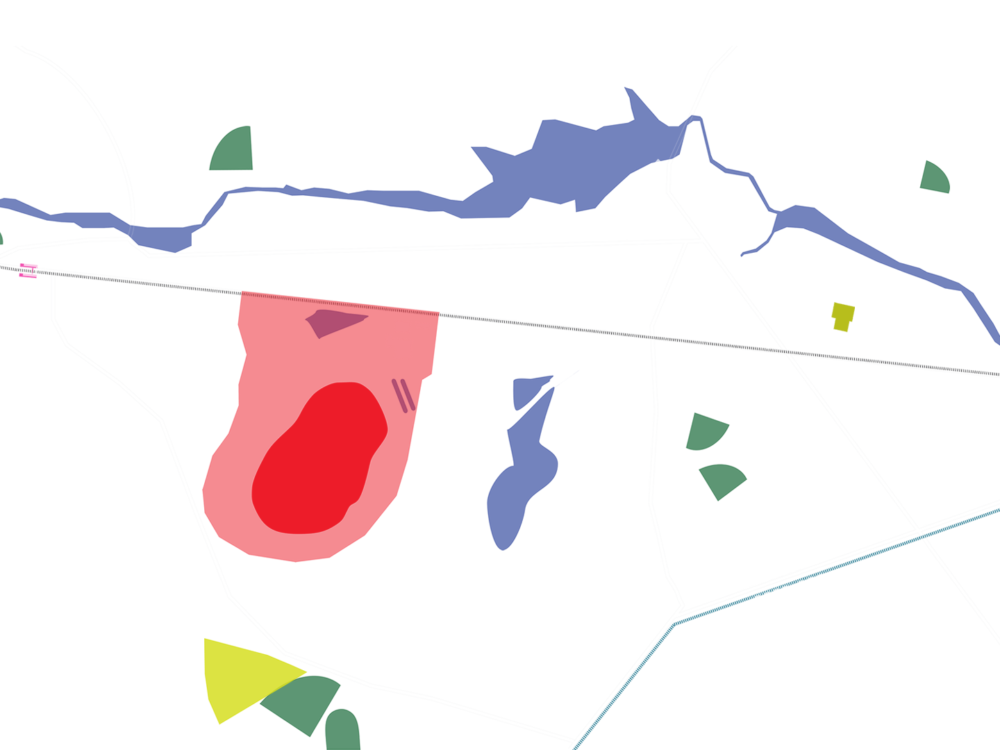
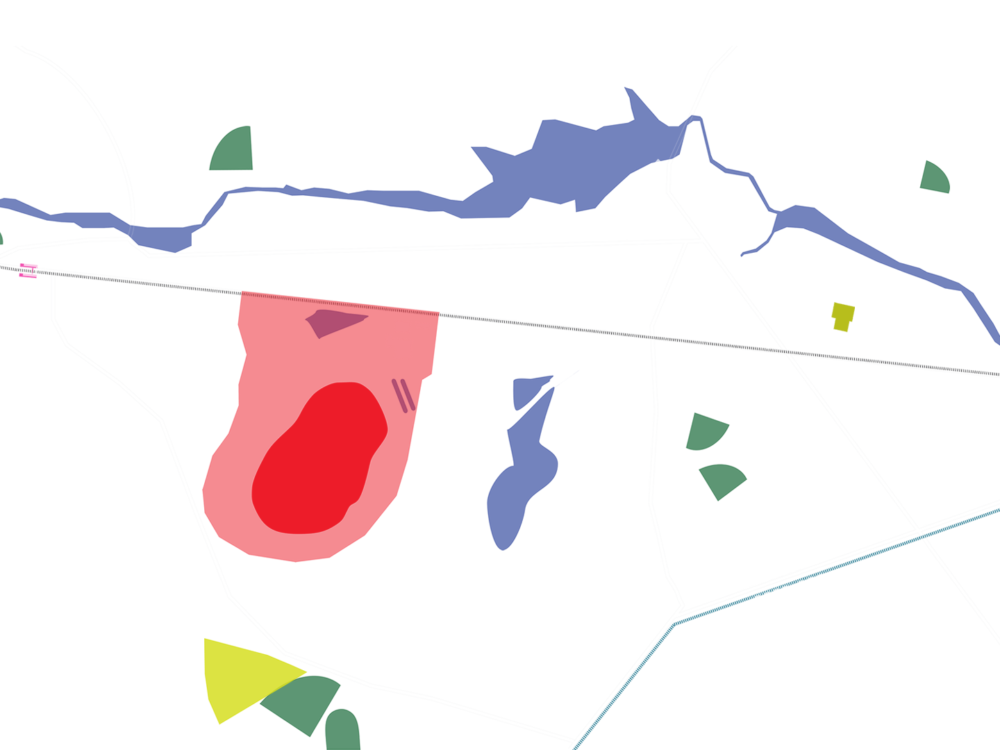

Aerial Map
2014
2009
2004
1999
1993
1982
1978
1970
1930
1917
The site was
listed on the
Superfund
National Priority
List
Nyanza closed
down due to
financial problems
Initial discovery
contamination
of Sudbury River
Nyanza Color &
Chemical Co.
merged with US
Color & Chemical
Co., expanding
its dyestuff and
textile chemical
business on the
site
US Color &
Chemical Co.
established labs
and factories
on the site
 
